Что можно автоматизировать?
Что такое вообще «автоматизация специалиста по 1С»? Что такое автоматизация автоматизатора? Что он может делать автоматически?
Эти задачи встречаются абсолютно у каждого, и очень многие 1С-ники делают их руками. Как вы обычно делаете выгрузку базы? Заходите в конфигуратор, нажимаете «Выгрузить» и т.д.? А почему бы не сделать себе кнопку, которая будет запускать выгрузку автоматически? Эти вещи вообще не должны делаться руками.
Мы можем автоматизировать и более интересные задачи – например, собирать для себя такие показатели, как:
На каком языке удобнее всего писать скрипты автоматизации?
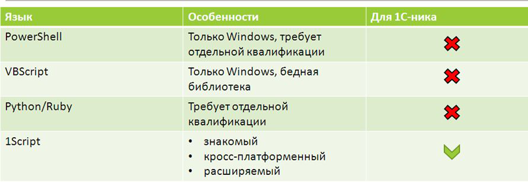
Ни для кого не секрет, что современная автоматизация IT-шников преимущественно выполняется на скриптах. Скрипты – это сценарии, которые написаны в обычных текстовых файлах. Для них не нужен отдельный компилятор, не нужно создавать проект в VisualStudio – это просто текстовики, которые можно запускать на исполнение. Это просто несложные программы, написанные в текстовом виде.
На чем можно писать скрипты автоматизации применительно к 1С? Существует масса инструментов для скриптинга:
Что такое 1Script?
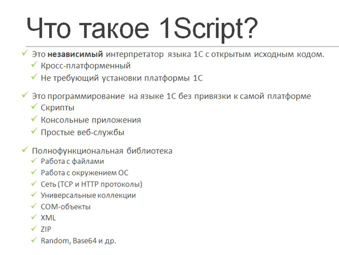
Итак, OneScript – это независимый от платформы 1С (никаким образом не использующий библиотеки платформы), кроссплатформенный интерпретатор языка 1С с полнофункциональной прикладной библиотекой.
Там есть работа с сетью, работа с файлами, с операционной системой.
Есть несколько режимов, несколько окружений работы.Это может быть:
Как мы используем 1Script?
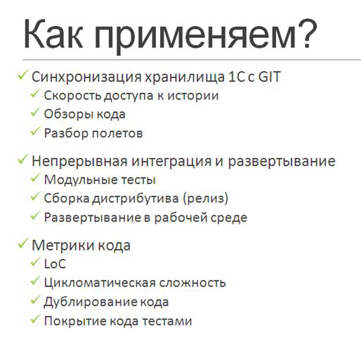
Мы уже больше года успешно применяем OneScript в режиме боевой эксплуатации в рамках одной крупной компании. С его помощью мы решаем три класса пересекающихся задач и наблюдаем при этом эффект синергии, поскольку, решая одну задачу, мы автоматически получаем средство для решения другой.
Синхронизация с GIT
Итак, синхронизация хранилища 1С с GIT. Зачем нам это вдруг понадобилось?
Ответ, на самом деле, простой: такая синхронизация позволяет увеличить скорость доступа к истории кода.
Как мы привыкли работать с хранилищем 1С? Например, придя рано утром на работу, мы поняли, что у нас в коде есть некая строчка, которая все ломает. Кто внес эту строчку и когда? Мы открываем историю кода, отматываем пару версий назад, запускаем сравнение, идем пить чай, возвращаемся, смотрим: не та версия, строчка все еще есть. Выбираем новую историю, запускаем сравнение, выпиваем чай, смотрим: не та версия. Ругаемся матом, выбираем другую версию и т.д. Получается, что из-за несовершенства инструмента мы тратим наше драгоценное время, неэффективно расходуем его, выполняя разбор полетов – кто и когда внес эту строчку.
А имея код исходников 1С в GIT, мне достаточно написать: git blame, и через секунду я уже вижу, кто внес эту строчку и когда. Таким образом, синхронизация хранилища 1С с GIT не заставляет меня пить чай литрами.
Для синхронизации хранилища с GIT мы используем специальное приложение на OneScript, о нем – чуть позже.
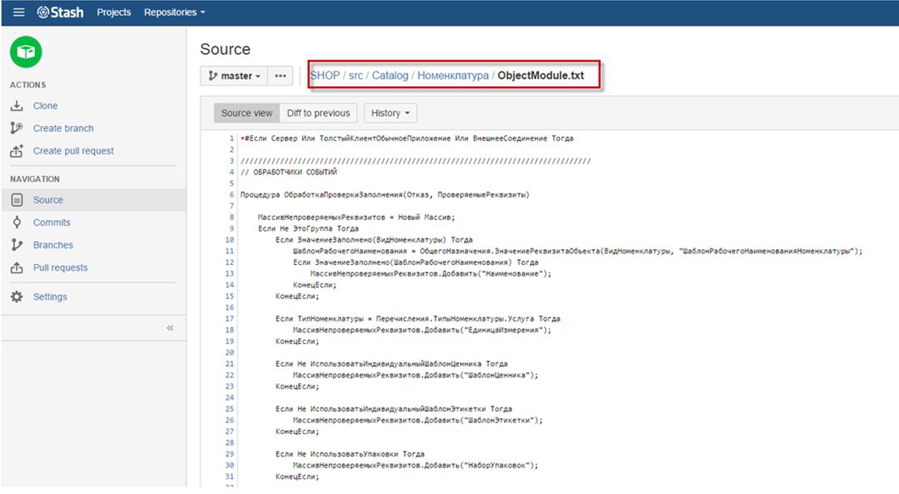
Пример выгруженных в GIT исходников 1С показан на скриншоте. В качестве сервера репозиториев мы используем Stash (это корпоративный аналог BitBucket).
У нас в компании внедрен стек Atlassian – это Stash, Jira, Codereview в виде Crucible и т.д., причем все эти инструменты замечательно интегрированы. Это дает очень полезный совокупный эффект.
Синхронизируясь с хранилищем, я уже прямо в веб-интерфейсе Stash вижу всю историю. Когда я хочу сравнить одну версию с другой, мне не нужно ждать – я просто кликаю по ссылкам и получаю сравнение за секунды.
Особенности синхронизации:
Самое главное здесь то, что мы при этом ничего не ждем. В мире и так сделано очень много полезных инструментов, и мы можем успешно их друг с другом интегрировать. Например, изобретен GIT, а с ним уже по умолчанию работает масса инструментов, включая и те, о которых я говорю. Поэтому, получая исходники в GIT, мы автоматически получаем доступ ко всем наработкам мирового сообщества. Это очень удобно.
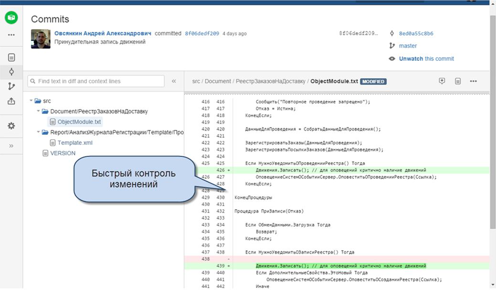
Точно так же доступен быстрый контроль изменений в рамках коммита – я сразу вижу, кто, что и где менял, по каким модулям.
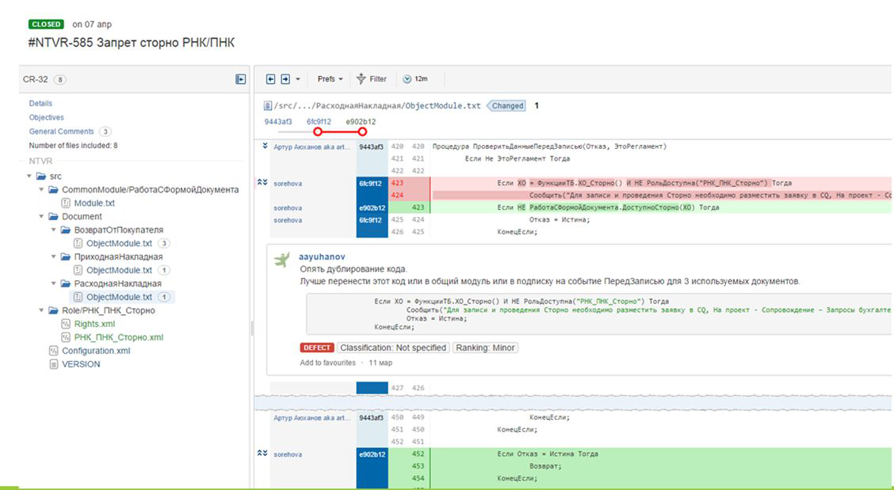
Еще один момент, от которого мы получили пользу практически сразу, как только внедрили – это обзоры кода. Это та штука, которая дала моментальный положительный эффект– мы сразу сказали: «Вау, как классно получается!»
Обзор кода мы выполняем с помощью Atlassian Crucible. Это продукт также из стека Atlassian, он тоже успешно интегрируется.
Какие положительные моменты мы получаем? Их несколько.
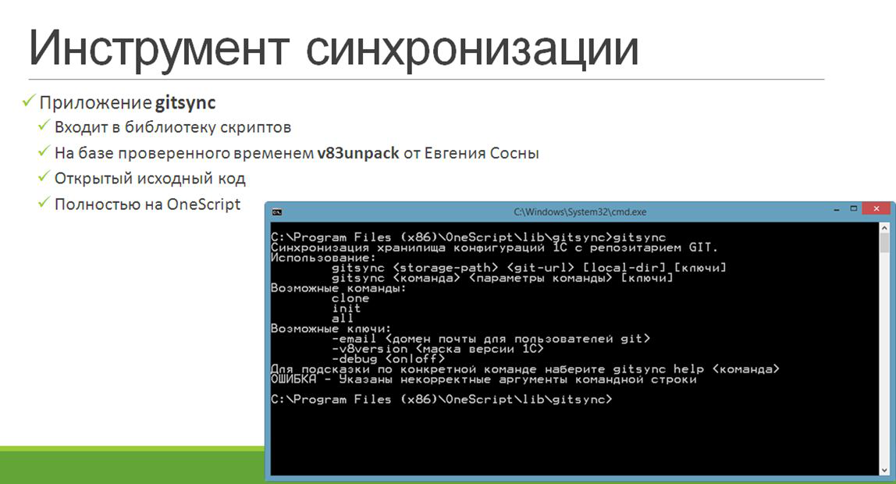
Как мы получили все эти прелести?
Мы взяли инструмент v83unpack, который написал очень уважаемый мною Евгений Сосна. Если кто не знает, v83unpack – внешняя обработка, которая выложена на github. А поскольку она написана на 1С, то мы обычным копированием через буфер обмена можем просто перенести ее код в скрипт и выполнять там (с небольшими изменениями). На базе этой обработки и было написано приложение gitsync.
Приложение gitsync – это именно консольная утилита. Поэтому запуская ее, вы даже не думаете, на каком языке она написана, вы прямо в командной строке пишете:
gitsync <путь к хранилищу> <url удаленного репозитория>
Нажимаете Enter – и все, пошла синхронизация.
Сборка релиза
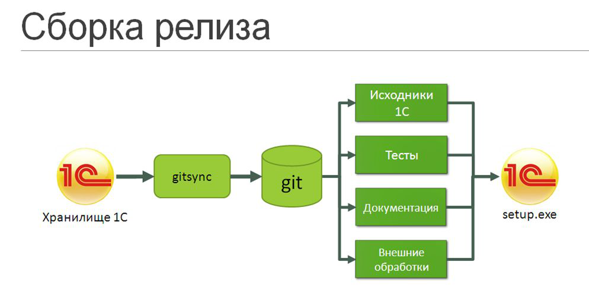
У нас внедрено релизное управление – это означает, что на рабочий контур накатывается не какая-то закладка в хранилище 1С, а выпускается специальный новый релиз, для которого мы собираем полноценный setup.exe (такой же полноценный дистрибутив, с каким поставляются типовые конфигурации и который устанавливается в каталог шаблонов).
Этот дистрибутив включает в себя не только код, но и документацию, приемочные тесты, какие-то внешние обработки и т.д. Все это мы также храним в GIT. Получается, что у нас не только код, но и вся сопроводительная документация, все материалы к релизу также версионируются в едином хранилище.
И, когда мы запускаем цикл сборки, все это компонуется в файл релиза (файл setup.exe), который мы выкладываем на сетевое хранилище, чтобы команда поддержки могла его оттуда забрать и развернуть в рабочей базе.
Развертывание релиза
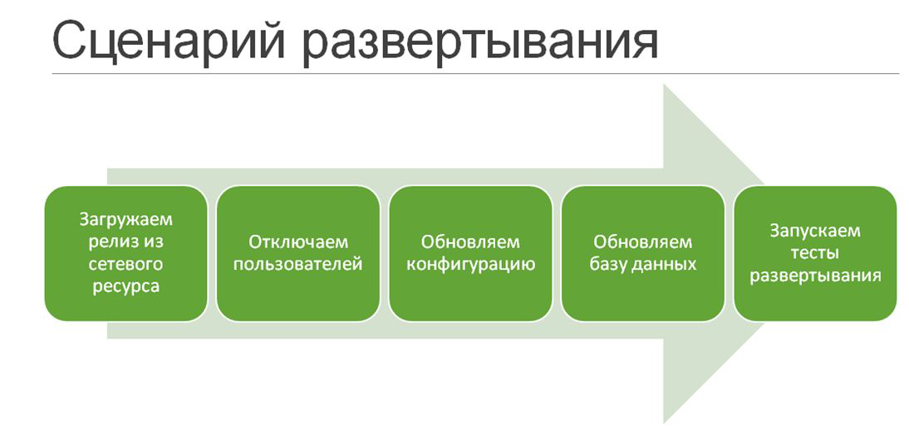
Сценарий развертывания у нас довольно простой и, в принципе, стандартный: билд-сервер загружает релиз, который ему выложили разработчики, отключает пользователей и выполняет развертывание. Это все, в принципе, понятно.
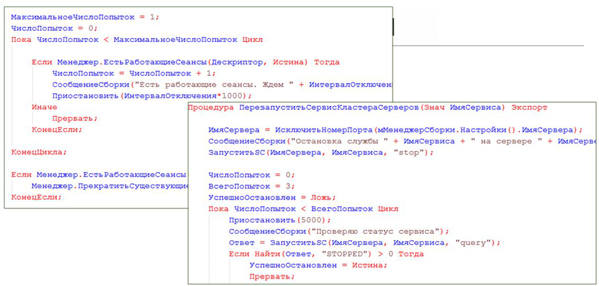
На скриншоте показан скрипт, который выполняет развертывание. Как вы видите, проверяется число попыток отключений, и если пользователь все еще есть, мы выводим сообщение, ждем немного, пытаемся опять его отключить и т.д.
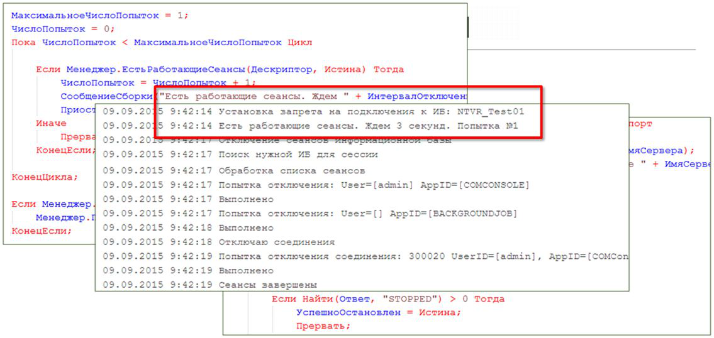
Здесь показана выдержка из лога билд-сервера. Обратите внимание, что в результатах сборки отображается сообщение о работающих сеансах, которое было прописано в скрипте – соответственно, мы можем отследить, как происходил процесс развертывания.
Билд-сервер для непрерывной интеграции
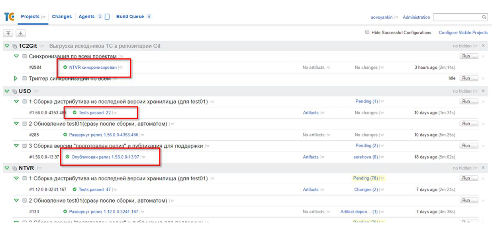
В качестве билд-сервера мы у себя используем TeamCity – он показан на скриншоте. Здесь можно увидеть наши проекты и состояние по ним. Например:
Просто открываем браузер и смотрим статистику, где какая версия в каком состоянии у нас находится, и т.д.
Чтобы раскатать релиз в базу, нам достаточно нажать кнопку Runв консоли билд-сервера, и мы получаем либо развертывание, либо сборку нового релиза.
Метрики кода
Что касается метрик кода, мы в основном используем уже существующие инструменты – либо с Инфостарта, либо те, которые получили в сообществе.
Как разрабатывать скрипты?
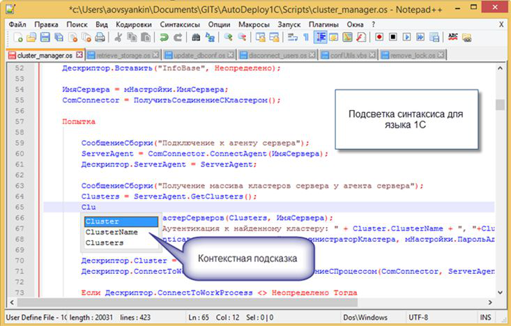
Мы для этого используем программу Notepad++. На Инфостарте можно найти подсветку синтаксиса языка 1С для Notepad++, а всплывающая подсказка там есть прямо «из коробки».
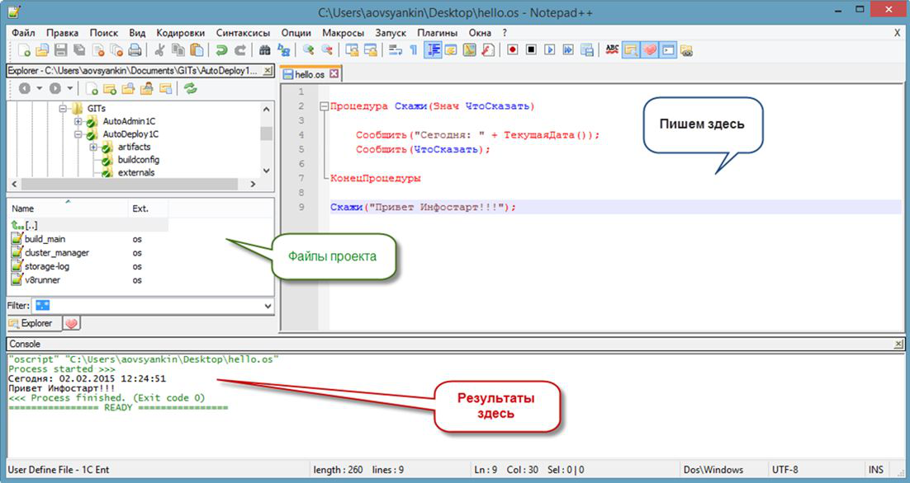
Необходимо сделать всего лишь пару настроек, и программа Notepad++ превращается в неплохую среду разработки, которая позволяет:
Я никуда не переключаюсь – это одно окно, где есть все, что нужно для разработки скриптов. Буквально в три нажатия кнопки Notepad++ превращается в такой редактор кода. Очень удобно.
Устройство языка 1Script. Доступная документация по проекту
Как устроен OneScript внутри?
Есть сайт – oscript.io, на котором находится вся документация по проекту.
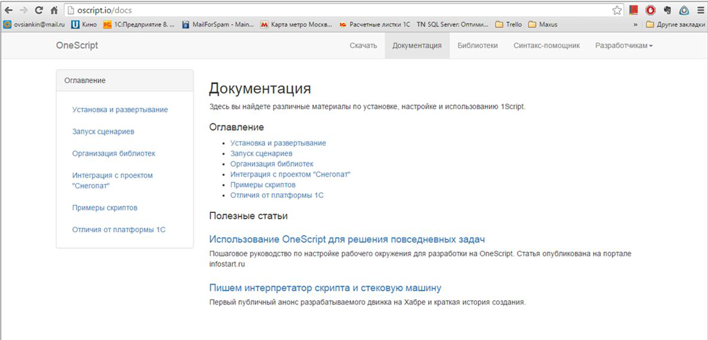
Там описан процесс установки, запуска: как разрабатывать, расширять и т.д.
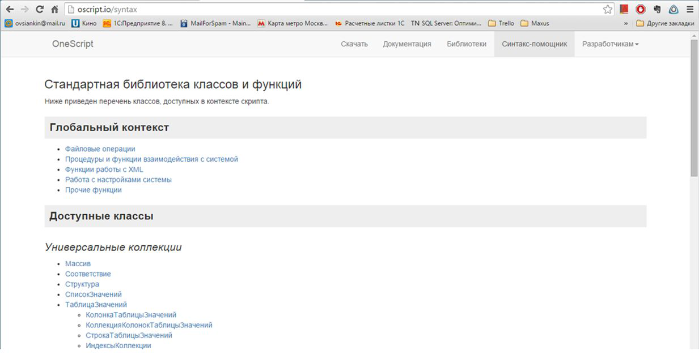
Также, что мне кажется наиболее важным, там есть онлайн синтаксис-помощник. Поэтому, когда вы захотите поподробнее узнать возможности глобального контекста, а также какие свойства и методы есть у того или иного класса, и т.д., достаточно зайти на oscript.io и посмотреть подсказку по синтаксису.
Новое в проекте. Библиотеки. Пакеты приложений
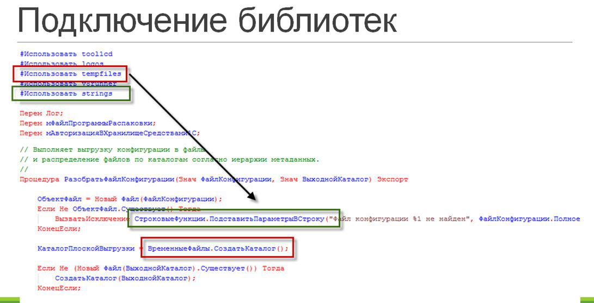
В прошлом году я уже делал доклад по OneScript, но тогда это был просто анонс инструмента, наработок непосредственно на скриптах на тот момент было еще очень мало, но мы уже довольно успешно использовали его у себя внутри, и нам это очень нравилось.
Постепенно накопилась кодовая база, которую захотелось использовать повторно.
Поэтому я добавил в движок возможность использовать библиотеки – была внедрена нестандартная директива препроцессора, которая так и называется: #Использовать (на скриншоте ее видно).
И теперь, если мы вначале скрипта пишем:
#Использовать <некую библиотеку>
у нас в области видимости скрипта появляются объекты этой библиотеки (классы или модули).
Например, если мы пишем:
#Использовать tempfiles
У нас подключается модуль «временные файлы», который содержит полезные функции для работы с временными файлами (автоудаление и пр.).
А для того, чтобы подключить мощную библиотеку строковых функций, нужно написать:
#Использоватьstrings
Более того, с тех пор появились пакеты программ:
Схема загрузки библиотек
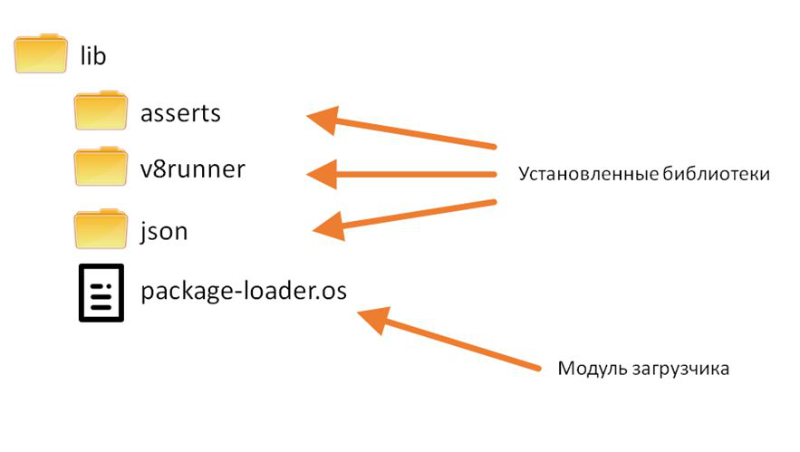
Как организована инфраструктура для загрузки библиотек?
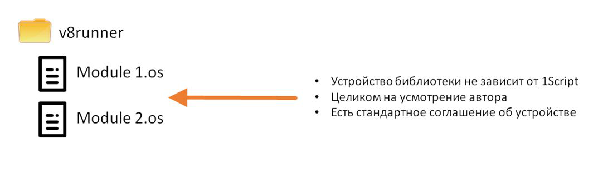
При этом, как я уже сказал, внутреннее устройство отдельной библиотеки никак не регламентируется, никак не диктуется.
Единственное, чтобы упростить задачу разработчика, есть стандартное соглашение о том, как строить пакеттак, чтобы с ним было удобно работать.
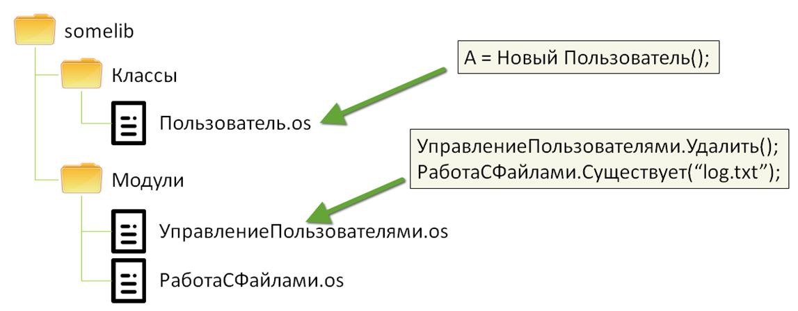
В соответствии с этим соглашениеммы можем складывать зависимые скрипты пакета в предопределенные каталоги «Классы» и «Модули»: если скрипт лежит в каталоге «Классы», значит, что это объект, который можно создавать с помощью оператора«Новый».
Допустим, если у нас там лежит файл Пользователь.os, то в основном скрипте библиотеки мы сможем создавать класс с помощью конструкции:
Новый Пользователь().
А если мы положим скрипт в папку «Модули», то мы сможем использовать его как общий модуль (сразу через точку, как свойство глобального контекста):
УправлениеПользователями.Удалить();
РаботаСФайлами.Существует(“log.txt”);
Если автор пакета захочет структурировать свои модули согласно этой схеме, ему надо всего лишь разложить соответствующие файлы в нужные папочки и добавить в свой пакет отдельный модуль загрузчика package-loader.os (помимо основного файла загрузчика, который лежит в корневой папке библиотек). Стандартный код такого «дополнительного» загрузчика показан на следующем слайде. При желании, его можно кастомизировать – внести туда свои правки или вообще написать свой вариант.
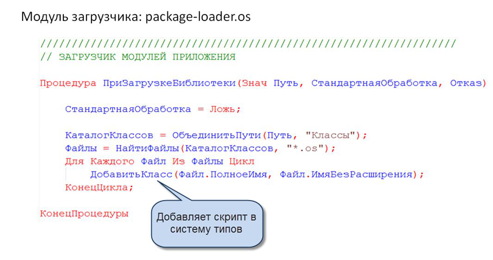
Что такое загрузчик? Это тоже скрипт. Поскольку вся логика загрузки библиотеки не прошита в движке, а точно так же заскриптована, мы можем просто поправить в этом скрипте событие ПриЗагрузкеБиблиотеки (здесь видно, что оно заключается в банальном переборе файлов каталога).
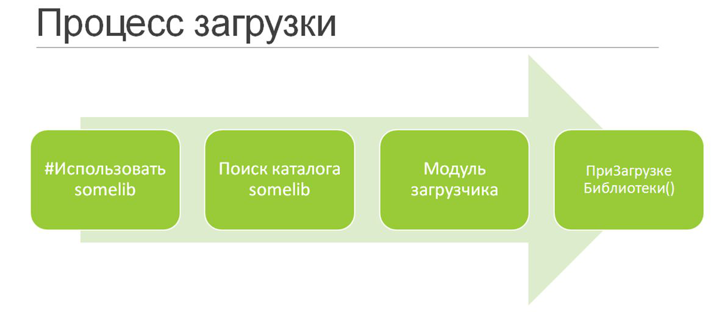
Как происходит загрузка библиотеки?
Когда компилятор встречает в скрипте директиву #Использовать, он ищет каталог, в котором лежит эта библиотека,инициализирует еемодуль загрузчика и выполняет его обработчик события ПриЗагрузкеБиблиотеки (там прописан алгоритм интерпретации загрузкиэтой библиотеки).
Пакетный менеджер
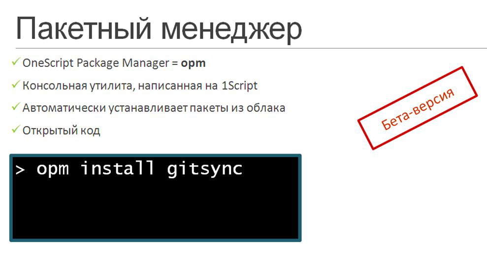
У нас есть облачное онлайн-хранилище пакетов, куда мы выкладываем сформированные нами наработки – вы можете их устанавливать и повторно использовать.
Для удобной работы с этими наработками есть пакетный менеджер, я назвал его opm (OneScriptPackageManager). Он также написан на OneScript и представляет собой консольную утилиту.
Вы открываете консоль и сразу пишете:
opm install gitsync
И дальше приложение запускается, идет в облако, скачивает приложение gitsync и устанавливает его. Поэтому следующим вашим шагом будет:
gitsync <хранилище такое-то> <urlрепозитория такой-то>
Это уже не просто скрипты, это приложения, которые запускаются сразу в командной строке под собственным именем.
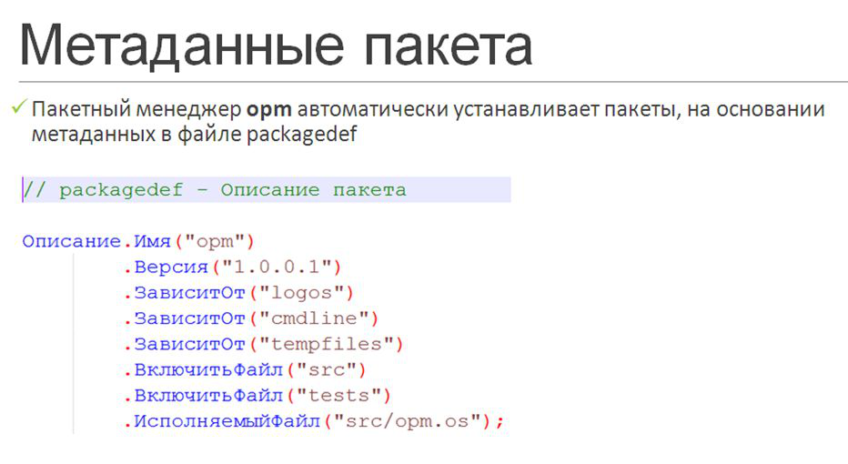
Для того, чтобы opm мог как-то идентифицировать пакет при скачивании, автору пакета достаточно подготовить специальный файл манифеста, который пишется в стиле «конфигурирование через код». По сути, это код, но он выглядит, как конфигурационный файл.
Мы пишем в нем:
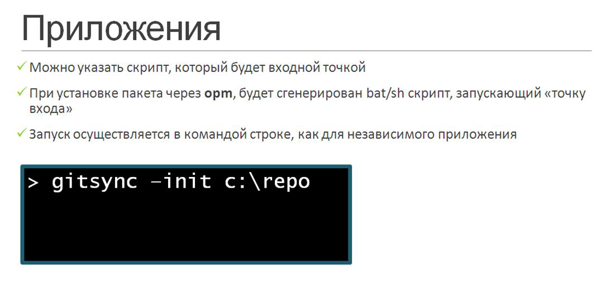
В случае, если у приложения прописана исполняемая точка входа, при установке через пакетный менеджер автоматически сгенерируется shell-скрипт, который будет эту точку входа запускать. И в результате мы получаем утилиту командной строки, пользователю которой неважно, на каком языке она написана – он просто ее запускает.
Примеры библиотек
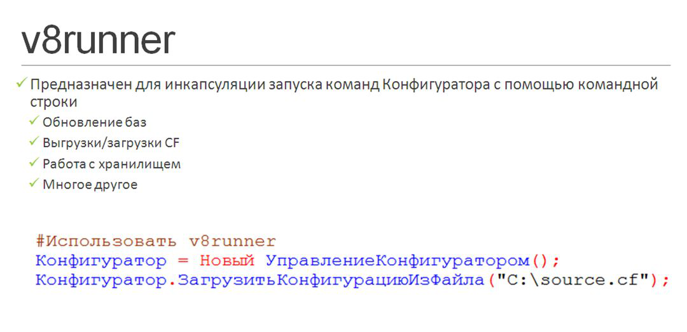
Немного о тех библиотеках, которые у нас уже есть.
Самой полезной по отдаче для нас стала библиотека v8runner – объектная обертка для конфигуратора.
Все знают, что у конфигуратора есть параметры запуска, позволяющие выгрузить конфигурацию, загрузить конфигурацию, разложить на файлы – очень много команд. И мы написали объектную обертку, которая позволяет нам удобно вызывать эти команды конфигуратора. Для этого мы подключаем библиотеку v8Runner и пишем:
Конф = Новый УправлениеКонфигуратором();
Конф.ЗагрузитьКонфигурациюИзФайла(ПутьКФайлу)
И она загружает этот файл конфигурации в нужную базу.
Мы можем создать информационную базу и указать версию платформы, которая должна быть при этом использована: v8runner сам определит, где установлена платформа, каких версий, найдет максимальную или определит наиболее близкую по маске. Эти низкоуровневые и неинтересные вещи закрыты там внутри, они не отвлекают ваш мозг от решения основной задачи.
Эта библиотека оказалась очень полезной – мы ее активно применяем.
Даже если вы не будете использовать OneScript (что делать нельзя), вы можете просто использовать этот код в своих разработках 1С – поскольку синтаксис одинаковый, код можно портировать просто переносом через буфер обмена.
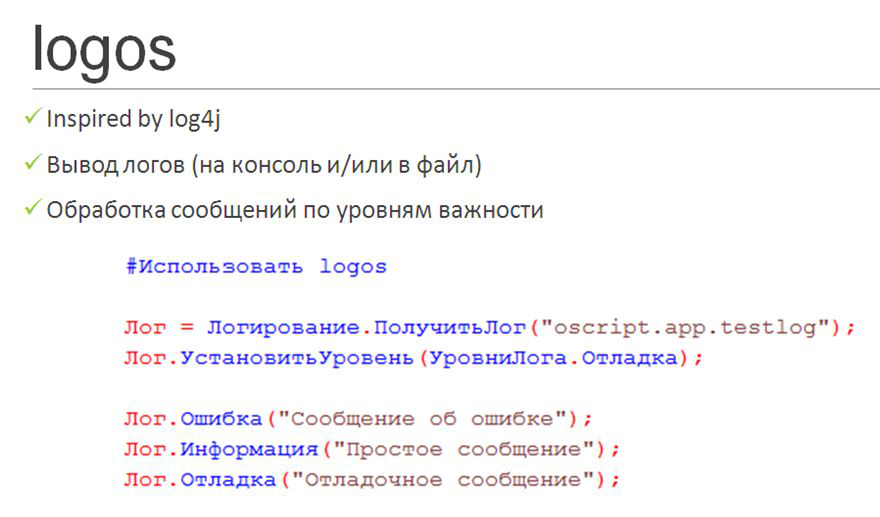
Вторая библиотека, которая имела такой же полезный эффект – это библиотека логирования logos, которая была написана под впечатлением от log4j (библиотека логирования для Java). Получилось логирование в стиле log4j на языке 1С.
Выглядит это так: мы у себя в коде приложения прописываем сообщения разного уровня, говорим, что это сообщение – об ошибке, это – вообще отладочное сообщение (оно нам не нужно) и т.д. А потом уже при эксплуатации приложения мы просто регулируем его «болтливость», устанавливая уровень лога (сейчас хочу отладочные сообщения, а сейчас – не хочу). Мы получаем нужный нам в данный момент уровень детализации лога, не переписывая код. Это очень удобно.
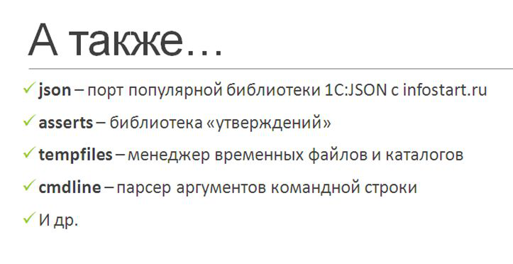
Если я не ошибаюсь, сейчас уже накоплено порядка десяти библиотек, которые родились в процессе применения OneScript в нашей компании. А поскольку мы ничего не прячем, то в проекте появляются библиотеки повторно используемого кода.
Заключение
В заключение, хотелось бы резюмировать:
Язык 1С – это такая linguafranca для 1С-ников. Когда наши коллеги в соседнем отделе внедряли у себя непрерывную интеграцию, я отдал им наши скрипты и какую-то документацию. Потом через пару дней встречаю в коридоре: «ну как, получилось?» Он говорит: «да, было что-то непонятно, но я посмотрел в код и разобрался». Смысл в том, что мы говорим с ним на одном языке и, когда ему непонятно, он может просто посмотреть в код. А если бы я написал это, не дай бог, на ruby, то он бы посмотрел в код и сказал: «Что это? Не буду я разбираться, внедрять не буду». А здесь он смог посмотреть в код, разобраться и внедрить у себя полезный инструмент непрерывной интеграции (о ее пользе мы говорить не будем, она очевидна).
Ресурсы проекта:
****************
Данная статья написана по итогам доклада, прочитанного на конференции INFOSTART EVENT 2015 CONNECTION 15-17 октября 2015 года.
Приглашаем вас на новую конференцию INFOSTART EVENT 2016 DEVELOPER.
От автора:
За год, прошедший с момента данного выступления, часть информации несколько потеряла актуальность, мы не стояли на месте и многое улучшили. В частности, активные участники сообщества @nixel2007, @bambr1975, @pumbaEO (кого забыл, напомните), создали новый редактор кода на 1С, взамен упомянутого здесь Notepad++. Рекомендую пользоваться именно этим редактором на базе Visual Studio Code.
https://github.com/xDrivenDevelopment/vsc-language-1c-bsl/blob/master/README.md